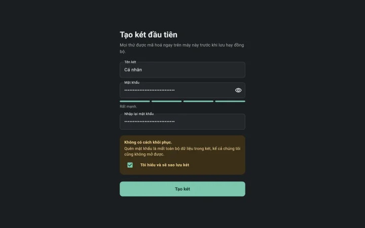
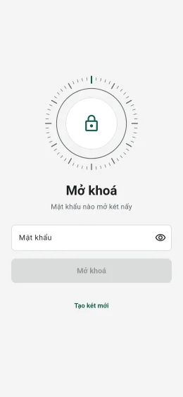
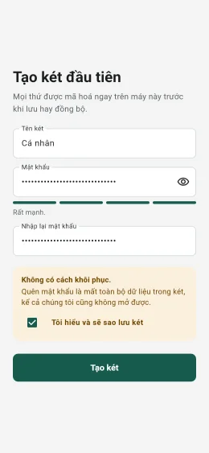
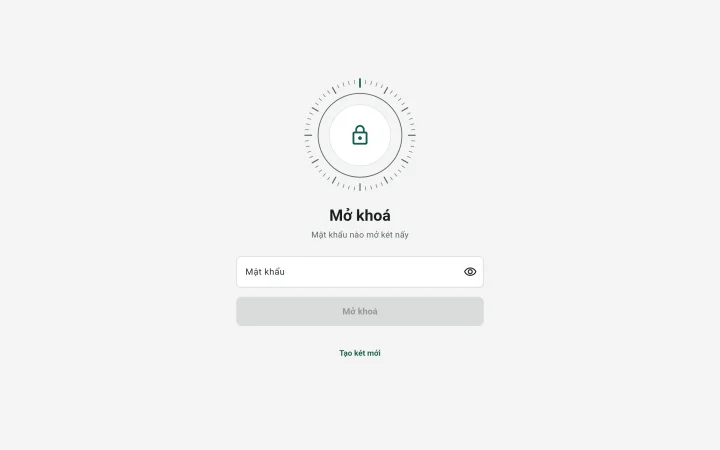

Két riêng cho ghi chú, giấy tờ và ảnh của bạn.
Mọi thứ được mã hoá ngay trên máy trước khi lưu hay đồng bộ. Không có mật khẩu của bạn thì không ai mở được, kể cả chúng tôi.
Tải vềMiễn phí và mã nguồn mở. Có cho macOS, Windows, Linux và Android; iPhone sắp ra mắt.
- macOS
- Windows
- Linux
- Android
- iPhone


Đây là bản thử nghiệm sớm. Bạn đã tạo két, mở và khoá két được. Ghi chú, file, ảnh và đồng bộ sẽ có ở các bản sau, nên tạm thời đừng cất bản duy nhất của thứ gì quan trọng vào đây.
Trên điện thoại và máy tính
Cùng một app trên mọi thiết bị, sáng hay tối theo máy của bạn.


Cozy Safe giữ an toàn cho bạn thế nào
Mã hoá ngay trên máy
Dữ liệu được mã hoá trước khi ghi xuống ổ đĩa hay thư mục cloud. Khi đồng bộ, thứ được gửi đi chỉ là dữ liệu đã mã hoá.
Mật khẩu cộng Secret Key
Mật khẩu được kết hợp với một khoá ngẫu nhiên 128 bit cất trên máy bạn, nên kẻ có bản sao két cũng không dò ra được mật khẩu.
Mã nguồn công khai
Ai cũng đọc và kiểm tra được mã nguồn (giấy phép GPL-3.0). Bản cài do GitHub build, có chứng thực nguồn gốc.
Những điều nên biết trước
Không có cách khôi phục
- Quên mật khẩu thì không ai mở lại được két, kể cả chúng tôi.
- Hãy chọn mật khẩu bạn nhớ được, chẳng hạn một câu gồm vài từ.
Những gì app không làm được
- Không bảo vệ được máy đã nhiễm mã độc.
- Người khác vẫn thấy máy bạn có cài Cozy Safe.
- Ai biết mật khẩu thì mở được két.
Tải về
| Nền tảng | File | Cách cài |
|---|---|---|
| macOS | CozySafe-macos.dmg | Đã ký và được Apple kiểm duyệt. Mở file, kéo Cozy Safe vào thư mục Applications. |
| Windows | CozySafe-windows-x64.zip | Chưa ký. Giải nén rồi chạy cozysafe.exe. Nếu SmartScreen cảnh báo, chọn "Thông tin thêm" rồi "Vẫn chạy". |
| Linux | CozySafe-linux-x64.tar.gz | Giải nén rồi chạy ./cozysafe. Cần GTK 3. |
| Android | CozySafe-android.apk | Ký bằng khoá phát hành của Cozy Pi. Khi Android hỏi, cho phép trình duyệt cài ứng dụng. |
| iPhone | Sắp có | Qua TestFlight, ứng dụng của Apple để dùng thử app mới. |
Muốn kiểm file tải về, so với SHA256SUMS.txt hoặc chạy gh attestation verify <file> -R cozy-pi/cozysafe. Các phiên bản cũ ở trang phát hành.